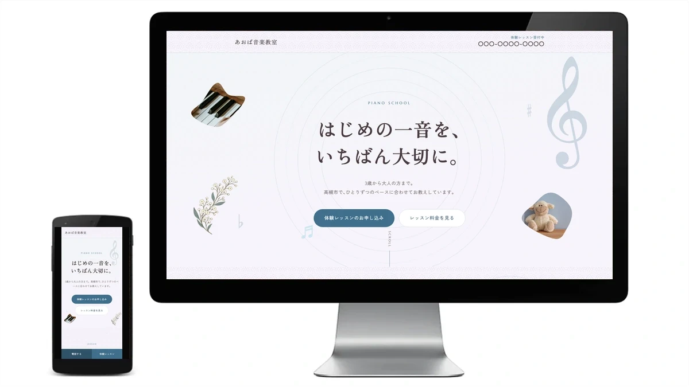
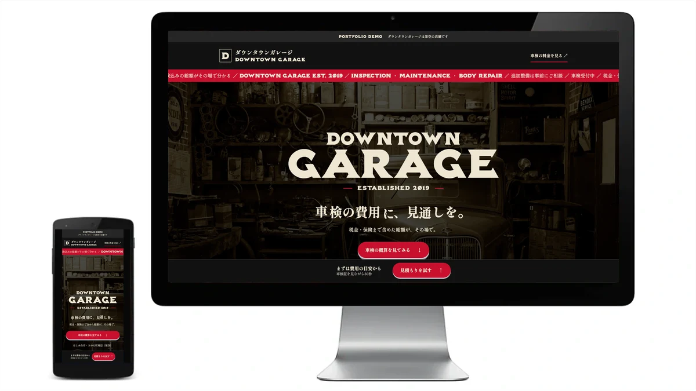
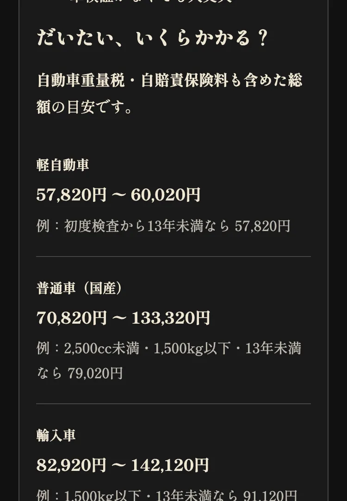
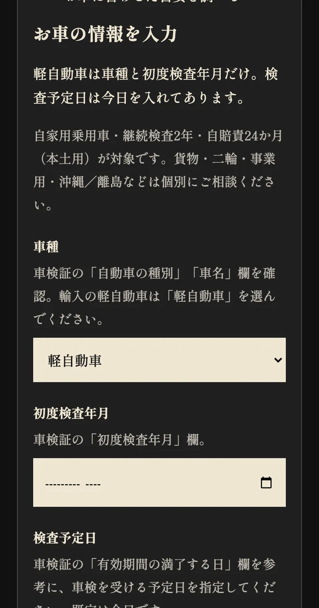
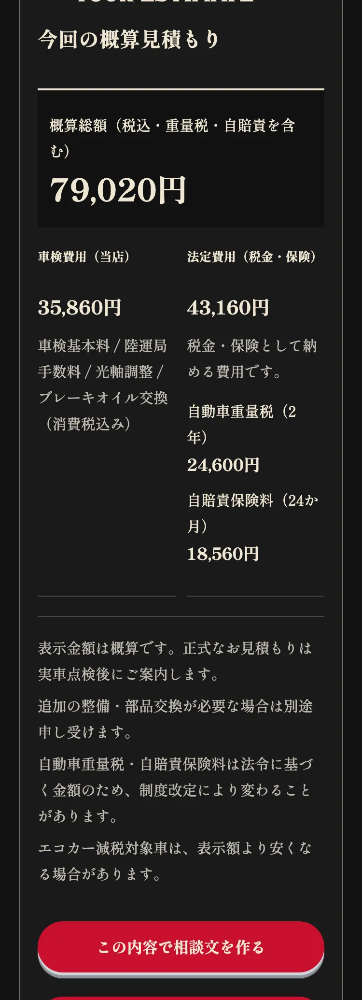
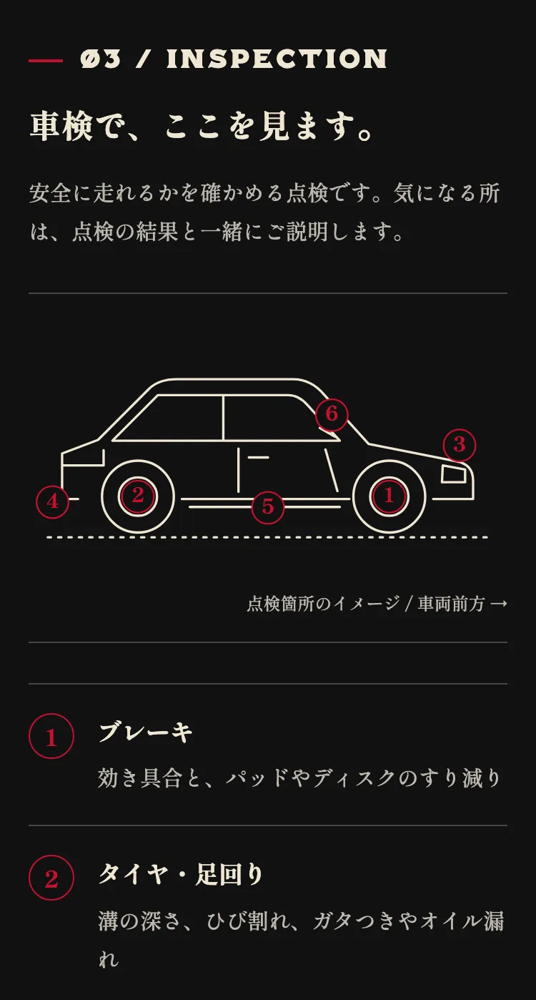

制作の詳細を見るWORKS車検・整備工場のサイト
デモサイト（自主制作・架空）

車検や整備を扱う町の工場向けに作ったデモサイトです。車検証を見ながら選ぶだけで、自動車重量税・自賠責保険料まで含めた車検の総額がその場で分かります。店名・住所・料金はすべて架空です。
こんな方に近い制作です
- 車検や整備の内容と費用の総額を分かりやすく伝えたい方
- 見積もりからLINEでの問い合わせまで、迷わず進めるようにしたい方
POINT 制作のポイント
-
1
税金・保険まで含めた総額を、
その場で出す 車検の費用には、整備料金のほかに重量税や自賠責保険料などの法定費用が含まれます。「＋法定費用」という表示だけでは分かりにくい総額を、その場で確認できるようにしました。
重量税と自賠責保険料は、国土交通省・損害保険料率算出機構の公表資料をもとに、車種・車両重量・初度登録年月・検査予定日から計算します。
初度登録から13年・18年で重量税が上がる判定は、登録車と軽自動車それぞれのルールに対応。2026年11月の自賠責保険料の改定も、日付で自動的に切り替わります。計算は71件のテストで確かめています。

-
2
車検証を手に持って、
迷わず入力できるフォーム 各項目に「車検証のどこを見るか」を添えました。車種で入力欄を出し分け、軽自動車なら入力は2つだけです。
車検証が手元にない人向けに、開いてすぐ見られる「だいたいの金額」も表示しています。

-
3
見積もり結果を、
そのままLINEで送れる 結果の画面から、入力内容と金額をまとめた文章ごとLINEで送れます。電話に出られない時間が長いお店でも、問い合わせを取りこぼしにくくする仕組みです。

-
4
無骨でアメリカンな世界観と、
動き 黒・クリーム・赤の3色に、古いアメリカの看板のような英字（Isometra）と明朝（Shippori Mincho）を組み合わせました。金額だけは読みやすさを優先して明朝の数字にしています。
流れる帯・画面に貼り付くトップ・一部の文字が小刻みに揺れる動き・厚みのある押し込みボタンで、世界観を表現しました。
「視差効果を減らす」設定の人には動きを止め、見積もりの入力欄には動きを入れていません。

WORKSほかの制作実績

CONTACT 同じような制作のご相談
車検・整備工場のサイトは、サービス内容や費用の目安、問い合わせ先を分かりやすく伝えることが大切です。掲載する情報の整理から、一緒に考えます。
＼ ご相談・お見積り・現状の診断は無料 ／